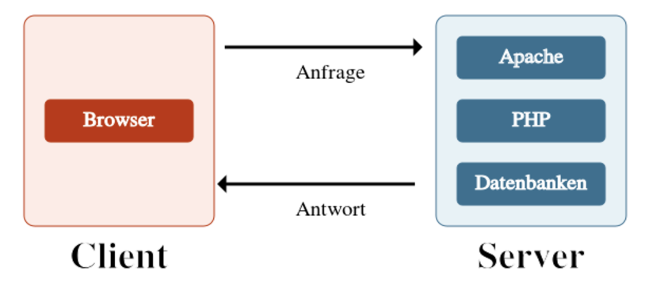

Chapter 9 Backend
In diesem Kapitel geht es um das Backend, also die “Cloud” // Webserver, welche meine gesamte Webseite (HTML, CSS & JS) hosted.
9.1 Allgemein
- rendern = Die Übersetzung des Quellcodes in eine visuelle Darstellung wird als rendern (englisch für wiedergeben, darstellen) bezeichnet. Ein rendering engine ist ein Programm, das HTML (und XML-Dokumente) verarbeitet und darstellt.
- parsen = Das elektronische Aufbereiten einer Zeichenfolge (= z.B. Bytes) wird als parsen (englisch für analysieren) bezeichnet. Beispielsweise erstellt - nachdem der Browser die HTML-Seite (als text-Datei!!) vom Server erhalten hat - ein HTML-Parser die Dokumentenstruktur - aka das DOM - welches im Anschluss durch den Renderer visuell dargestellt wird.
- 200-er Statuscode = Wenn der Webserver bei der HTTP-Response einen 200-er Statuscode schickt, dann meint er, er habe die HTTP-Request vom Browser erfolreich zurückgeben können. Es steht also für “OK, du hast genau das bekommen, was du gefragt hast”.
- 404-er Statuscode = Steht für “Not Found”.
- HTTP-Headers = Das sind Key-Value-Paare, welche in der HTTP-Request ODER -Response stehen.
- Beispiel:
Date: Mon, 28 Aug 2017 09:02:55 GMToderContent-Encoding: gzipwären sogenannte HTTP-Headers.
- Beispiel:
- Payload = Nutzdaten, welche bei der HTTP-Response eines Webservers für den Browser // Client zur Verfügung steht.
9.2 Synonyme
- Webserver = Host = Server-Softwar (manchmal ist diese auch damit gemeint)
9.3 Kontext
9.3.1 Was ist eigentlich ein Webserver? Und was versteht man unter Client-Server-Technologie?
Ein Webserver ist ein Computer, der 24/7 // rund um die Uhr online ist und seine gepeicherten Inhalte auf Anfrage zur Verfügung stellen kann.
So wartet etwa ein Web-Server darauf, dass Anfragen eintreffen, die Web-Seiten auf dem Server-Rechner abrufen wollen.
Clients sind dagegen Software-Programme - beispielsweise der Google-Chrome-Browser oder der Safari-Browser - die typischerweise Daten von Servern anfordern. Der Browser selbst verfügt über eine Software, die in der Lage ist, die html-Seiten richtig anzuzeigen auf dem Computer-Bildschirm.
Um die Kommunikation zwischen Clients und Servern zu regeln, gibt es entsprechende Protokolle.

## Das HTTP-Protoll für die Client-Server-Kommunikation
Bei HTTP (= kurz für "hyptertext transfer protocol) handelt es sich um eine Art Sprache, in der ein Webserver und ein Browser miteinander kommunizieren.
Kontext: Wieso ist es wichtig zu wissen, wie das
HTTP-Protokoll funktioniert?
Es ist notwendig, das HTTP-Protokoll zu kennen, wenn du Datentransfers zwischen Client & Servern programmieren willst. Dies kann entweder client-seitig erfolgen, z.B. über die Scriptsprache JavaScript, oder mit einer serverseitigen Skriptsprache, z.B. Python, PHP, Java, Perl oder ASP.NET.
Praxis: Probiere es selber aus und siehe, wie das HTTP-Protokoll “live” funktioniert auf deiner eigenen Webseite
- Mein Youtube-Video: https://www.youtube.com/watch?v=Jd_u7gAsAwk&feature=youtu.be
Request und Response
Kommunikation zwischen Browser & Server per HTTP geschieht immer in dieser Reihenfolge:
- Request
- Response
Ruft ein Seitenbesucher mit seinem Browser eine Internetseite auf, so sendet der Browser eine Anfrage (Request, englisch für Bitte/Wunsch/Anfrage) an den Webserver, die von diesem mit einer Response (englisch für Antwort/Erwiderung/Reaktion) beantwortet wird.
- Wichtige Bemerkung: Browser & Webserver können sich über
HTTPausschließlich Textdateien zusenden! Diese werden an den Client häufig (immer?) codiert, beispielsweise imbase64-Format fürGIFs-Dateien.
Content-Type
Bei der HTTP-Repsonse des Servers gibt es einen HTTP-Header, welcher besonders wichtig ist: den “Content-Type”-Header. _Hierbei kann der Programmierer dem Server die Anweisung gegeben, in welchem Daten-Format (also als .html oder als .css oder als .jpeg etc…) er dem Client die Angefragte Datei zusenden soll.
Für eine Übersicht zu allen Daten-Formaten, empfiehlt sich diese Webseite.
- Beispiel, eines “Content-Type”-Headers, der eine
.html-Seite als Response dem Client zur Verfügung gestellt werden würde:Content-Type: text/html; charset=UTF-8.
GETundPOST
Gleich in der ersten Zeile der HTTP-Request steht das Keyword GET. Dieses wird verwendet, wenn du Daten auf dem Server abrufen möchtest.
Manchmal aber wollen wir Daten auf den Webserver übertragen // speichern, wie z. B. bei einem Login-Formular. Dazu gibt es eine weitere Methode, nämlich POST.
9.4 Statische VS. Dynamische Webseiten
Aus Sicht des HTTP-Protokolls ist es völlig egal, ob eine vom Client angeforderte Ressource auf dem Server fertig gespeichert ist oder ob es erst im Moment der Anforderung durch ein Programm wie PHP aus Bausteinen zusammengesetzt wird.
Allerdings wurde diesen beiden Möglichkeiten, eine Webseite zu “rendern” (= Darstellung auf dem Browser des Clients), einen Namen gegeben:
- Statische HTML-Seiten liegen als fertige Dokumente auf dem Server vor und müssen nur (zum Client) übertragen werden. Meine Webseite
https://www.audiophil-dreams.com/ist ein Beispiel, für eine statische Webseite. - Dynamische Webseiten werden vom Server aus Datenbankinhalten erzeugt und mit Header und Navigation versehen. Beispiel hierfür wären Instagram oder Facebook.
9.5 Web-Techniken für das Backend
9.6 Caching
Mit Caching kann die Performance // Ladezeit einer Webseite extrem verbessert werden (wenn das Caching richtig implementiert wurde!), was wiederum zu einer besseren User-Experience führt (weil die Leute wollen deinen Content sehen, je schneller, desto besser!), was wiederum zu besseren Rankings führt (langfristig).
Insbesondere nachdem Google den “Mobile-First”-Approach gewählt hat, werden Cache-Strategien & Best-Practices in diesem Bereich relevanter denn je…
9.6.1 Grundvoraussetzung
Voraussetzung, um eine gute Cache-Strategie implementieren zu können, ist, dass du das Konzept vom HTTP-Kommunikationsprinzip zwischen einem “Client” und einem “Server” verstehst.
- Key to note:
no-cachedoesn’t mean “don’t cache”, it means it must check (or “revalidate” as it calls it) with the server before using the cached resource.no-storetells the browser not to cache it at all. Also must-revalidate doesn’t mean “must revalidate”, it means the local resource can be used if it’s younger than the providedmax-age, otherwise it must revalidate. Yeah. I know, it is confusing… xD
9.6.2 Was die Implementierung von einer “guten” Caching-Strategie so schwierig macht
Auch wenn der Webserver am Browser (= Client) den Befehl gibt, eine Datei für 1 Monat im Cache zu behalten, kann es sein, dass der Brwoser diese dropped.
Das (problematische) Beispiel, welche die Schwierigkeit von Caching darstellt:
Angenommen, du hast 1 HTML-Seite, 1 CSS-Datei & 1 JS-Datei hast, welche alle voneinander abhängig sind UND auch ge-cached sind für 10 Minuten. Nun machst du ein Update der CSS-Datei & HTML-Seite, weil du zusätzlichen Inhalt auf der HTML-Seite hinzufügen UND verschönern willst.
Zusätzlich nehme ich an, dass es einen Besucher gibt, welcher vor 5 Minuten auf deiner Webseite war - und deshalb alle 3 Files im Cache gespeichert bekommen hat - wobei nun jedoch noch nicht 10 Minuten vergangen ist, macht eine erneute HTTP-Request, um auf die HTML-Seite zu gelangen, ohne zu wissen, dass du Änderungen auf der CSS-Datei UND HTML-Seite gemacht hast. “Kein Problem”, könntest du dir denken, da ja der Browser eigentlich noch die 3 “veralteten” Files im Cache haben sollte (und der Besucher somit mit der veralteten Version in Kontakt treten sollte). In der realen Welt kann es allerdings durchaus sein, dass im Cache nur noch die HTML-Seite & die JS-Datei sind, nicht jedoch die CSS-Datei, weil der Browser diese (ohne Vorwarnung!!) gedropped hat - trotz der Anweisung des Servers, diese im Cache zu behalten (wurde jedoch nicht vom Browser getan… xD)! Somit würde also der Client nochmals beim Server die CSS-Datei verlangen, da er diese im Cache nicht finden kann. Hierbei ist nun wichtig zu bemerken, dass die CSS-Datei allerdings verändert wurde und somit vielleicht gewisse Styles gar nicht mehr auf die (alte) HTML-Seite anwendbar sind (weil der Browser hat diese ja im Cache gespeichert und fragt sie - fälschlicherweise - nicht an, obwohl sich diese ja auch verändert hat! Da max-age jedoch noch nicht überschritten ist (< 10 Minuten sind vergangen), hat er die Anweisung des Servers bekommen, das nicht zu tun. xD
Die böse Konsequenz des Beispiels: For the user, this can result in broken layout (CSS) and/or functionality (JS).
Lösung: A refresh will solve this issue! If the page is loaded as part of a refresh, browsers will always revalidate with the server, ignoring
max-age.- Alternative Lösung: Verwende einen “Proxy” // CDN, wie zum Beispiel “Cloudfare”, welche als “Client” mit deinem Webserver in Kontakt tritt. Der Server gibt dem CDN die Caching-Anweisungen. Anschliessend wird der CDN nun mit den einzelnen Browser-Caches kommunizieren. Dies wird in diesem Video erklärt (ab )
Link für audio-visuelle Alternative über dieses Beispiel: https://www.youtube.com/watch?v=z4XdfFscxSk
9.6.3 Meine gewählte Strategie
Schlussendlich habe ich mich für folgende Strategie entschieden: https://www.youtube.com/watch?v=JXAg8zpZIJg